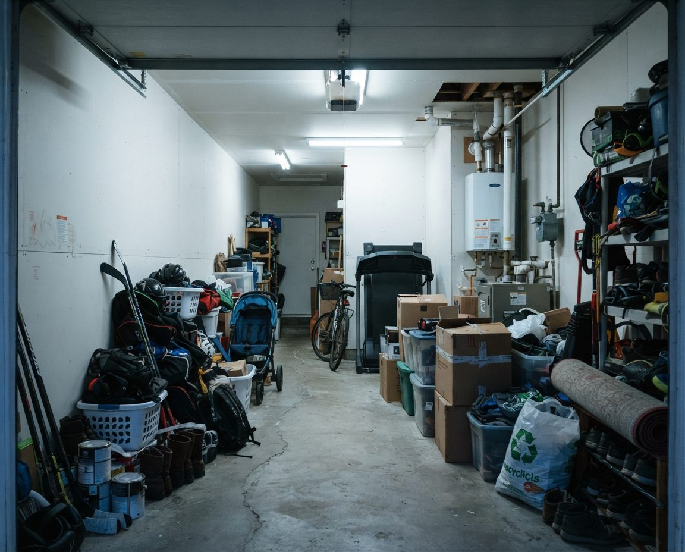

Elbow Valley sits just past Calgary's west edge on Highway 8, in Rocky View County. It has its own private roads, its own Residents Club and no City carts, so clearing a garage here works differently than it does a few kilometres east. We clear Elbow Valley garages for a sale, a move or just to get the car inside for winter, and we sort every load so you only pay to haul what can't go anywhere cheaper.
The Residents Club describes Elbow Valley as 699 homes on about 400 acres of privately owned lots, surrounded by about 600 acres of common land: the roads, parks, lakes, docks, pathways and the beach. Phases 1 to 4 and Hidden Hollow Villas are on the south side of Highway 8. Phases 5 and 6 are on the north side. Apart from Lott Creek Drive and Clearwater Drive, which the County owns, every road in the community is private property.
For a quote, email inquiry@garagescape.ca four photos and one line of text. The photos: the garage with the door up, the back wall, anything heavy (a second fridge, a workbench, a snowblower), and the driveway from the street. The line: your phase or the name of your neighbourhood association, and whether you have a date to hit. Or call (587) 804-9266.
Inside the city, a cleanout crew parks on a public street and nobody asks. In Elbow Valley the truck drives on roads the residents own, maintained and patrolled with their fees, and governed by the Residents Club bylaws, your phase's bylaws and, in some areas, a neighbourhood association's own rules. None of that stops a one-day cleanout. It does mean we ask a few things on the phone that we wouldn't ask in Signal Hill.
| Question | Why it matters here |
|---|---|
| North or south of Highway 8? | Phases 5 and 6 are north, everything else south. It decides how we approach and which way we leave for the landfill. |
| Are you in a neighbourhood association? | Alpine Meadows, Bent Tree Village, Diamond Willow Point, Stag's Leap and Riverside Villas each have their own bylaws on top of the Residents Club's. If yours has rules about contractors or vehicles, we follow them. |
| Lake lot, acreage lot, detached or semi-detached? | These are the Residents Club's own four lot types. A lake lot usually means a longer carry and lake gear. A Fisherman's Bend or acreage lot can mean a second building. |
| Can the truck back up the driveway? | We load from the driveway, not the road. If the driveway is shared, steep or narrow, we plan a shorter truck or a longer carry. |
| Has it snowed in the last day? | The Residents Club says roads are usually cleared within 6 to 12 hours of a snowfall. We'd rather start late than block a half-ploughed road. |
| Were you planning a bin? | Call the Residents Club at (403) 240-4386 before renting one. We work from one truck and leave nothing on the lot, so there's nothing to approve. |
Source: Elbow Valley Residents Club, general information, read November 5, 2026. We haven't seen every phase's bylaws, so if you have a copy and something in it applies, send it with the photos.

Elbow Valley has no black, blue or green City carts. Household garbage and recycling go through the Residents Club's own collection program, and the County runs a Chuck Wagon, a small mobile drop-off, on Lott Creek Drive on Saturdays. Neither is built for a garage's worth of stuff, but both are cheaper than paying someone to haul it.
There's one more catch. Rocky View County's transfer sites are residential drop-off only and don't take commercial loads. That includes ours. So anything we carry goes to City of Calgary facilities, and anything you're willing to drop off yourself at a County site can come out of our load before we price it. Here's how we split it:
| Place | When | What it takes | Who takes it there |
|---|---|---|---|
| Elbow Valley Chuck Wagon, 31040 Lott Creek Dr | Saturdays, 9 a.m. to 3 p.m. | Household garbage at one tag-a-bag ticket per bag; newsprint, mixed paper, cardboard, clear glass, plastic; small metal items only | You. We stack broken-down cardboard and bagged recycling by the door for it. |
| Springbank Transfer Site, 32190 Township Rd 245 | Wednesdays and Saturdays, 9 a.m. to 5 p.m. (Nov 1 to Mar 31) | Tires, used oil and filters, antifreeze, paint and aerosol paint, batteries, bulbs, electronics, propane tanks up to 30 lb, fire extinguishers | You. We box these separately so it's one trip. |
| Rocky View County household hazardous waste sites | Year-round at Bragg Creek, Cochrane, Langdon, Irricana and Airdrie | Solvents, pesticides and the chemicals Springbank won't take | You, or we set them aside and tell you where they're going. |
| Our truck | The day of the cleanout | Furniture, bulk garbage, scrap, appliances, anything you don't want to handle | Us, to City of Calgary landfills, recyclers and donation drop-offs. |
Sources: Rocky View County, Elbow Valley Chuck Wagon (read November 5, 2026), Springbank Transfer Site and household hazardous waste pages (read October 29, 2026). Tag-a-bag tickets are sold at the Chuck Wagon by cheque, online, at other County sites and at County Hall. Grass and leaves were only accepted at the Chuck Wagon until October 31.
You don't have to do any of this. Plenty of people tell us to take everything, and we do. But if you've got a Saturday free, the split can take a real bite out of the load. Our acreage cleanout page has the full County fee list, and it covers shops and outbuildings if your lot has one.
The Residents Club's fees pay for the community's lakes, ponds, docks and beach, and the owners of lake lots pay the highest fee class for living on them. What that does to a garage is predictable: boats and boards, the stuff that goes with them, and nowhere to put any of it from October to May. Golf adds another layer, with Elbow Springs, Glencoe, Pinebrook and River Spirit all close by.
Lake gear is where families slow down, so we sort it into its own area before anything else leaves:
If what you really want is wall storage for the gear you're keeping, that's our organization service for Harmony and Elbow Valley, usually booked after the cleanout is done.
Elbow Valley's resident fees are secured by an encumbrance registered on every lot, and before a home can be resold the Residents Club issues an estoppel certificate. Any unpaid fees have to be cleared first. That's your lawyer's job, not ours, but it's one more thing on the list in the weeks before possession, and the garage tends to get left to the end. We'd rather it didn't.
| When | What happens in the garage |
|---|---|
| Before listing photos | Cleanout and dry sweep. A clear garage photographs as parking; a full one photographs as storage. |
| Before you sign | Decide what stays with the house. Lake gear, a dock ladder, spare tiles or paint matched to the house are worth asking the buyer about before they're hauled away. |
| Two weeks out | Last Chuck Wagon Saturday you're sure to be home for. Paint, oil and batteries out to Springbank on a Wednesday or Saturday. |
| Possession week | Final sweep and anything the movers left behind. Book this with the first visit so it's on the calendar. |
If you're clearing a parent's house rather than your own, our estate garage cleanout page covers valuables, paperwork and family decisions in more detail. For the selling timeline in Calgary itself, see garage cleanout before selling.
Calgary has been under Stage 4 outdoor water restrictions since November 4, 2026, while the City finishes work on the Bearspaw South Feeder Main, and no one inside the city may wash a driveway or walkway. Elbow Valley is a different case. Its water comes from Westridge Utilities, not the City. We haven't confirmed whether the same rules apply out here, and we're not going to guess with a pressure washer running down someone's private road. Until Calgary lifts Stage 4, we dry-sweep and put absorbent on fresh drips, and come back for the wash if you want one. If you need an answer about your own water use, Westridge's number is (403) 228-2543.
Our garage floor cleaning and coated floor cleaning pages cover the wash itself, including epoxy and other coated floors.
We quote each garage from the photos or a walkthrough. There's no flat Elbow Valley rate, and these are the things that move the number most:
If you'd rather do the sorting yourself and only want the heavy items gone, our garage decluttering service is built for that. Across the city line, our Aspen Woods and Springbank Hill page covers the nearest Calgary communities, and garage cleanout in Calgary covers the rest.
We don't publish a minimum, because the drive out Highway 8 is part of every job here. If you only have a few bags and some cardboard, the Elbow Valley Chuck Wagon on Lott Creek Drive takes them on Saturdays and that will cost you less than any crew. We're worth calling when the job is a full garage, heavy items, or a deadline.
Sort it and use the County's free streams. The Chuck Wagon at 31040 Lott Creek Drive takes recycling free on Saturdays from 9 to 3, and household garbage with one tag-a-bag ticket per bag. The Springbank Transfer Site takes tires, used oil, paint, batteries, e-waste and small propane tanks, and is open Wednesdays and Saturdays from 9 to 5 between November and March. What's left after that is what costs money to haul.
We quote from photos or a walkthrough, not a flat rate. The price depends on how much of the garage is heavy garbage by weight, how much sorts out to free streams first, how many fridges or freezers need refrigerant removal, and how much time the family wants to spend deciding. For comparison, Rocky View County charges residents $50 per half-ton of bulk waste and $22 per furniture item at its sites.
For a crew and a truck for a day, usually not, but your phase bylaws and any neighbourhood association rules apply, and almost all of the roads in Elbow Valley are private. If you're thinking about renting a bin or leaving a pile on the driveway, call the Residents Club first at (403) 240-4386. We do one-truck jobs and leave nothing on the lot, so there's no bin to approve.
Work back from the possession date. Clear the garage before the listing photos, not after, and leave a week of slack for the paperwork the sale already needs, including the Residents Club's estoppel certificate. Decide early what stays with the house, such as dock or lake equipment the buyer may want, so it isn't hauled away by mistake.
Not this month. Calgary has been under Stage 4 outdoor water restrictions since November 4, 2026. Elbow Valley's water comes from Westridge Utilities rather than the City, and we haven't confirmed whether the same restrictions apply there, so we're not doing wet floor washes anywhere until Calgary lifts them. We dry-sweep after the cleanout and can come back for the wash.
Only for the walkthrough, which can be a video call. If you're away for the winter, we can work from a door code or a key left with a neighbour. Anything personal or valuable goes into a set-aside pile, and we send photos of it and of the finished garage.
The garage with the door up, the back wall, anything heavy, and the driveway from the street. Add your phase or neighbourhood association and any date you need to hit, and we'll come back with a quote and a plan for what goes where.
Elbow Valley, Springbank and the rest of Rocky View County west of Calgary.